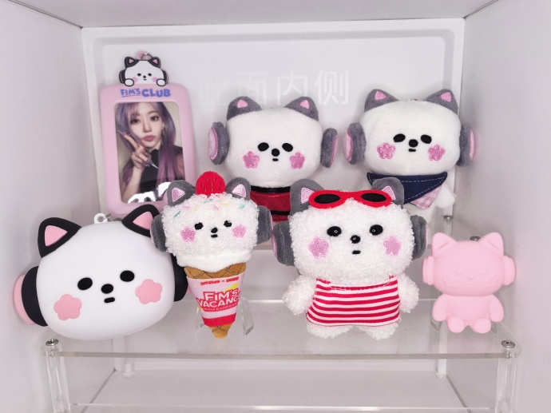
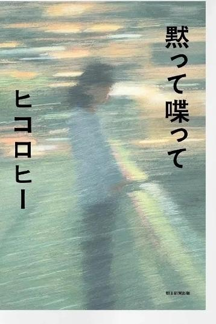

隔日刊
2
No.002
🫧サクラ新聞
まいにち、みやわきさくら
PUREFLOW 開巡！
仁川二日、樱色満開

2026.07.11-15
開巡特集号♡

sakkukku
cr｜SAKKI
令和八年文月 · 編集部
壱
サクラ新聞
ライブレポ ①
PUREFLOW 世界巡演 7/11 仁川开幕！蓝色灯海里的长粉卷，开口第一句就知道——这一巡稳了。

長い粉巻き、権威です🫡 cr｜Anthea

手のフレーム越し👁 cr｜Anthea

黒裙×青光 cr｜Saki_Cosmose
ライブレポ · 仁川
弐
サクラ新聞
ライブレポ ②
二日目连开！蓝皮衣 GIA 舞台×粉光高马尾——一蓝一粉，两种颜色两种杀伤力。

青ジャケットのGIA様💙

ポニーテール横顔
cr｜Maltese（260712 仁川D2） 高马尾一甩，粉发权威再+1🙏🏻
ライブレポ · 仁川D2
参
サクラ新聞
樱言樱语
本期语录栏——巡演间隙的直播小剧场，句句可爱暴击，谨慎阅读。
🐥 名场面
演唱会上没找到妈妈
🐱「妈妈有点小难过」
🐥「因为你没找到她」
🐱（学妈妈的语气）「你看到我了吧？😃」
🐱（当时的kkura）「哦？你在哪儿？？」
——然后妈妈就 😞😞
🏀 呆萌
用手去接屏幕里的篮球
看直播看进去了，猫猫伸手要接屏幕里飞来的球🤦 这个反射弧，可爱到需要保护。
前情回顾 · 金句
「有男朋友吗？」「就是因为太可爱了呀，没有和我般配的人😌」——上期名场面，重读依然理直气壮。
樱言樱语
肆
サクラ新聞
IG便り
7/14 本人 IG 更新⭐️ 「Couch Philosophy」背心＋气球星星，后台的小小 party。

気球×星のコラージュ🎈

風船ごしのカメラ目線🫧
拼图排版好有 sense，kkura喵喵 is playing🐱 cr｜咲良IG @39saku_chan
IG便り · 260714
伍
サクラ新聞
樱花書架
固定栏目 · 每期一本咲良读过的书。继续翻她的「2026年1月读过的书📕」——
読書
印章
印章

❀ 宮脇咲良の読書リストより vol.2
黙って喋って
ヒコロヒー 著 ／ 朝日新聞出版
「黙って」なのに「喋って」——
书名就先赢一步🫧
书名就先赢一步🫧
搞笑艺人ヒコロヒー的恋爱短篇集。一篇篇几乎全靠男女之间的对话撑起来——说出口的、咽回去的、错过的话，把恋爱里那些微妙的瞬间写得又好笑又扎心。
上一本是宇航员的人生随笔，这一本是恋爱掌篇——樱樱书单的跨度，和她本人一样有趣🌸
樱花書架 · 第弐回
陸
サクラ新聞
今後の樱程
仁川场完美收官，巡演进入小休整——下一站，日本！（出典：官方 SCHEDULE）
8/8·9SAT·SUN
TOUR
PUREFLOW IN JAPAN · 静岡
日本场开幕二连
8/14·16FRI·SUN
FES
SUMMER SONIC 2026
大阪(8/14) · 東京(8/16)
8/18·19TUE·WED
TOUR
PUREFLOW IN JAPAN · 宮城
东北的夏天有樱花
9/2·3WED·THU
TOUR
PUREFLOW IN JAPAN · 福岡
回到九州🌸
＊日程出自 le-sserafim.jp 官方 SCHEDULE，会場等以官方公告为准。
EDITOR · 碎碎念
开巡两场刷完九宫格，存货够回味一个月。八月的日本场，这次是主场作战了🌸
今後の樱程 · 完
七